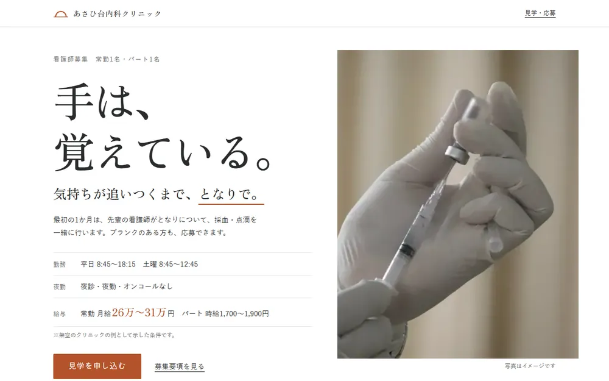
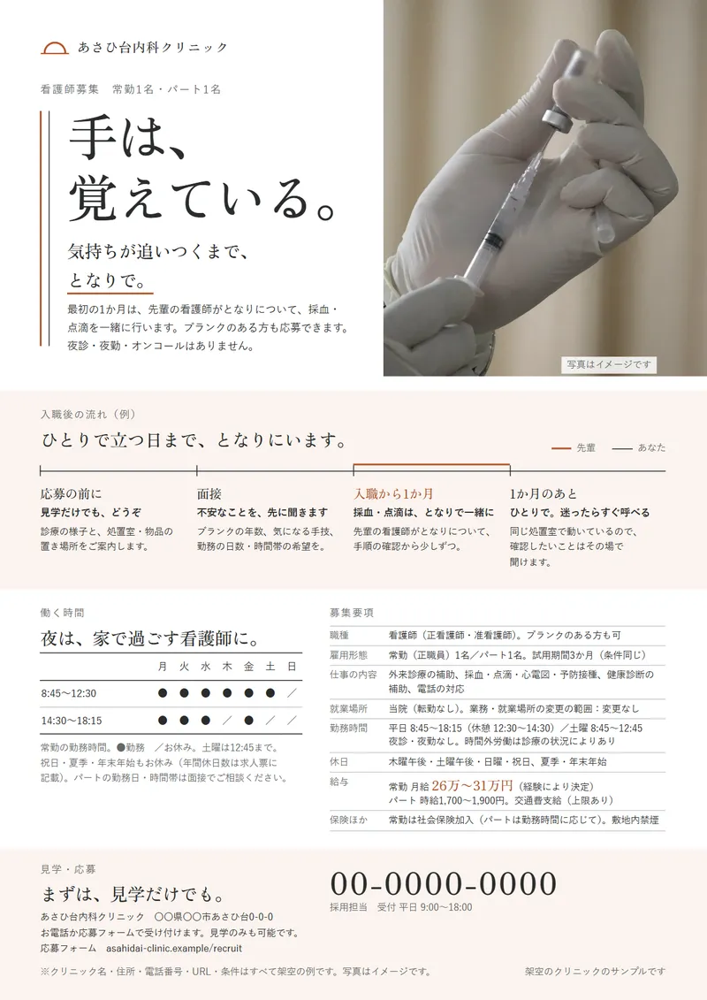
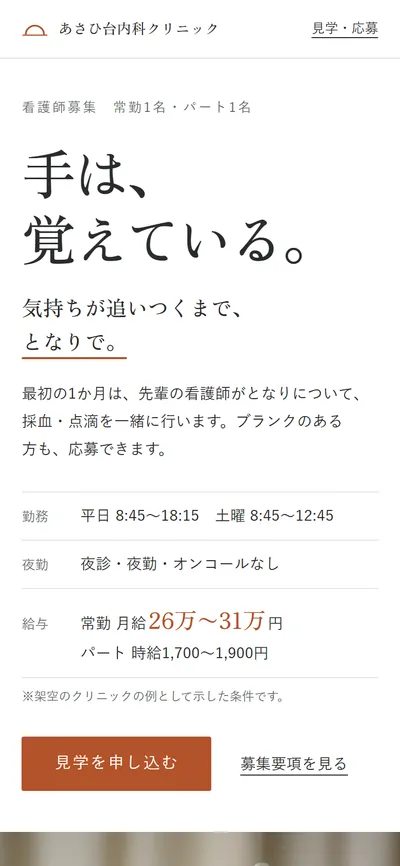
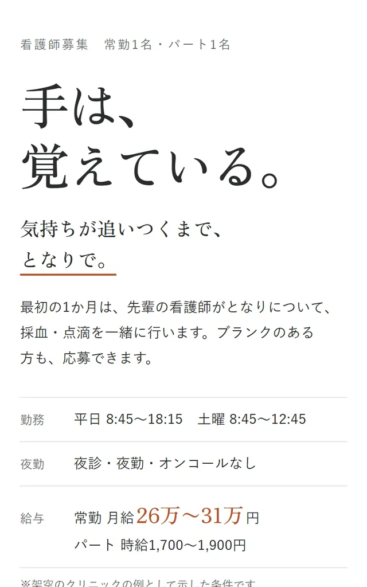
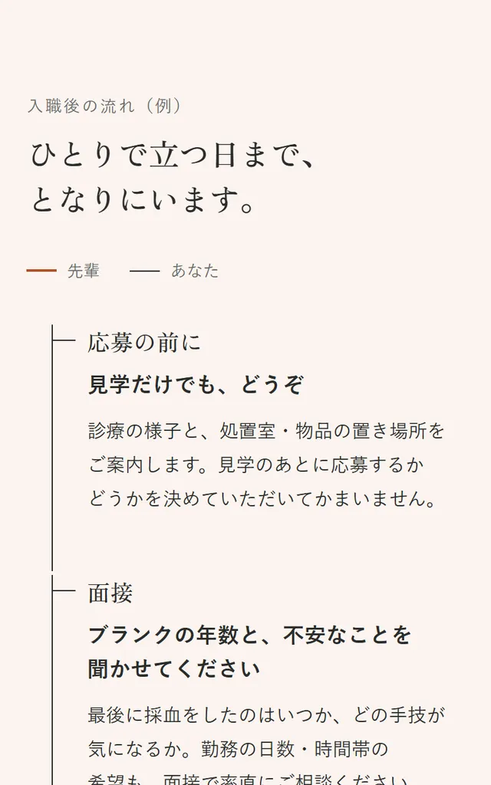
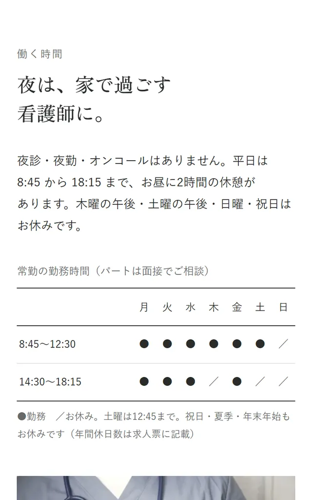
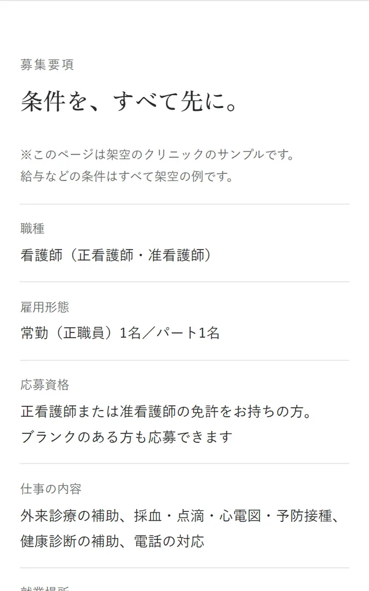

求人バナー（伝え方の違う3案）
1080×1080（Instagram・求人サイトのサムネイル）と 1200×628（Web広告）
- 課題
- 求人サイトや広告では、たくさんの求人と並んで一瞬で見比べられる
- 意図
- ブランク・働き方・職場の空気と入口を変えた3案を作り、反応を比べられるようにしました
- 工夫
- 構図も変えています（2本の線と写真／文字と勤務の表／上に写真）。下の淡い朱の帯には、3案とも同じ条件の抜粋と「見学のみも受付」を置き、どの案でも同じクリニックだとわかるようにしました
制作の解説｜採用LP・求人バナー・チラシ・クリニック
「ブランクが不安で、面接の前に辞退されてしまう」という困りごとに、
採用LP・求人バナー3案・院内に貼るチラシで答えました。



※自主制作の作品です（実在のクリニックとは関係ありません。住所・電話番号・URL・給与などの条件は仮の内容です）。
※写真は素材サイト（Unsplash）のイメージです。実際のスタッフや院内の写真ではありません。
Brief
依頼の中の、ちょっと困った要望
「院長のメッセージ600字と、全部の条件を最初の画面に入れたい」「30代くらいまでの女性に来てほしい」「残業ほぼゼロ、地域No.1の働きやすさと書きたい」
Decision
辞退の理由は、夜勤ではなくブランクの不安でした。そこで最初に消す不安をブランクに決め、入職後の最初の1か月に何があるかを、いちばん具体的に書くことにしました。
現場を離れていても、手技は手が覚えていることが多い。それでも緊張するのは当然なので、最初の1か月は先輩がとなりで採血・点滴を一緒に行う——依頼文にあるこの条件を、コピーの根拠として本文に必ず添えています。バナーでは、働き方（「夜は、家で過ごす看護師に。」）と職場の空気（「待合室の『こんにちは』から始まる仕事。」）の案も作りました。
病院らしい青一色やピンクのハートは、依頼のNGでした。クリニックの名前の「あさひ」と、日勤で出勤する朝の時間から、朝日の朱を差し色にしています。その朱をごく淡くした地は、「入職後の流れ」と「見学・応募」の“となりにいる”所だけに使い、LP・バナー・チラシで同じ使い方にそろえました。
最初の画面は「ブランクのある、日勤希望の看護師」ひとつにしぼり、院長のメッセージは一文だけを引用して全文は下の段に、条件は勤務時間・夜勤なし・給与の3つだけを上に出しました。年齢・性別を限る書き方は求人ではできないため、「ブランクのある方」「子育てや介護など、それぞれの事情」と状況で書いています。残業の実績の数字はないため、「18:15終業・夜診なし」という事実だけを書きました。
Design
スマホで見たときの画面です。

大きな言葉のすぐ下に、勤務時間・夜勤なし・給与の3行。全部の条件は下の募集要項にまとめ、最初の画面では迷わせないようにしました。

墨の線が「あなた」、朱の線が「先輩」。朱の線は入職から1か月の間だけ並んで走り、そこで終わります。ページの背骨になる部分なので、余白もここだけ大きくとっています。

クリニックの入口に貼ってある、曜日と午前・午後の表と同じ形にしました。木曜・土曜の午後と日曜がお休みであることが、文章を読まなくてもわかります。

雇用形態・仕事の内容・就業場所と変更の範囲・勤務時間・時間外労働・休日・給与・試用期間・社会保険・受動喫煙対策・応募方法まで、求人で示す条件をひとつの表にまとめました。
Promotion
地の色・見出しの組み方・線の使い方・写真の色味を、LPと同じルールでそろえました。
画像を押すと、大きく表示します。
1080×1080（Instagram・求人サイトのサムネイル）と 1200×628（Web広告）
A4縦・片面／塗り足し3mmとトンボ付きのPDF
Check
Contact
「まだ何も決まっていない」段階でも、
大丈夫です。
ご相談・お見積りは無料です。